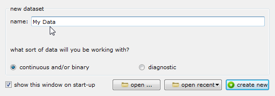
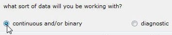

Creating a New Data Set
To create a new data set:
- Type the name of the data set:

- Select the type of data you are working with. In this example, the data type is binary.

- Select create new.
This opens the dialog shown below.

- In the dialog, type a name for the outcome of the test, and select the
type of outcome, Binary or Continuous, depending on the type of
data you are analyzing. Then click OK.
The Open Meta-Analyst window now displays a row of fields where you can
enter data. For binary data, the row appears as shown
below.